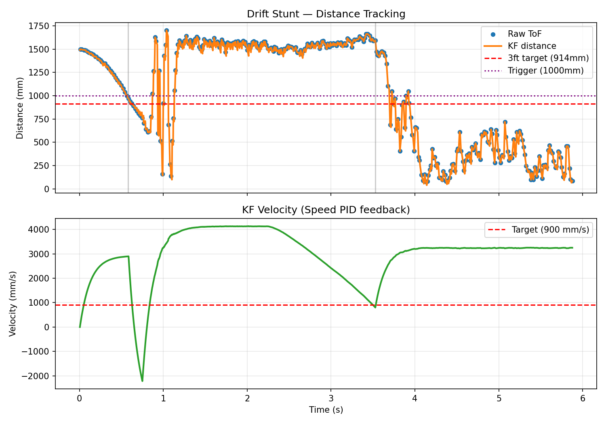
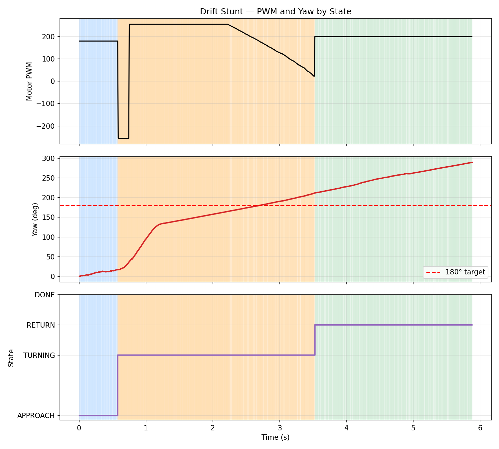

This lab combines motors, ToF, IMU, BLE, PID, KF and other work we've done into a single fast stunt. For Task B, a drift manuevre, the robot starts behind a line less than 4m from a wall, drives toward it at high speed, and once within 3ft (914mm) initiates a 180° drift turn before driving back past the start. I also added a speed PID on top of the KF velocity estimate for the optional extra credit, so the approach speed stays consistent regardless of battery level or surface.
Eight new commands were added on top of the Lab 7 set, starting at index 32. The Artemis logs time, raw ToF, KF distance, KF velocity, motor PWM, yaw, and the current stunt phase every loop iteration, then streams them back after the run.
// Lab 8 commands
START_STUNT, // 32 arg: 0=flip, 1=drift
STOP_STUNT, // 33
SET_FLIP_PARAMS, // 34 trigger_dist | reverse_pwm | duration_ms
SET_DRIFT_PARAMS, // 35 trigger_dist | turn_angle
SET_SPEED_GAINS, // 36 Kp | Ki | Kd
SET_APPROACH, // 37 target_speed | max_pwm | use_speed_pid
SET_RETURN, // 38 return_pwm | return_duration | timeout
SEND_STUNT_DATA, // 39The stunt is made as a small state machine to keep each phase isolated and easy to tune. Each loop, the KF predict/update runs, the IMU is read for yaw, then the current phase function is dispatched.
enum StuntState {
STUNT_IDLE = 0,
STUNT_APPROACH = 1, // drive at speed toward wall
STUNT_FLIP_TRIGGER = 2, // slam reverse for flip
STUNT_TURNING = 3, // 180 deg yaw turn for drift
STUNT_RETURN = 4, // drive back past start
STUNT_DONE = 5
};It stops after 8 seconds automtically and has a kill switch if it goes rogue.
During approach, instead of just a constant PWM, a speed PID uses the KF velocity estimate as feedback to track a target speed (mm/s). This means a slightly drained battery doesn't make the robot trigger late, and tile vs. carpet doesn't really change the behavior. The output is clamped between the deadband and a max PWM cap so the integrator can't wind up forever also.
float speed_error = approach_speed - kf_velocity;
speed_integral += speed_error * dt;
speed_integral = constrain(speed_integral, -2000.0, 2000.0);
float speed_deriv = (speed_error - speed_prev_err) / dt;
float pid_out = speed_Kp * speed_error
+ speed_Ki * speed_integral
+ speed_Kd * speed_deriv;
motor_pwm = constrain(pid_out, (float)DEADBAND, approach_pwm_max);The KF from Lab 7 was reused as-is. Predict runs every loop using the current motor PWM (normalized by step size) as input, and update only runs when the ToF actually has a fresh reading. This is what lets the controller make decisions at ~100Hz instead of being stuck at the ~50Hz ToF rate, which matters a lot when you're driving fast and need to trigger the turn at exactly the right distance.
For the drift, the orientation PID from Lab 6 is reused inside the turning phase. When the KF distance drops below the trigger threshold, the current yaw is captured and the setpoint is set to yaw + 180. The PD controller then spins the robot in place until the error drops inside the tolerance, and then return takes over.
void run_drift_turn() {
ori_error = ori_setpoint - yaw;
while (ori_error > 180.0) ori_error -= 360.0;
while (ori_error < -180.0) ori_error += 360.0;
if (abs(ori_error) < ORI_TOLERANCE) {
stunt_state = STUNT_RETURN;
stunt_phase_start = millis();
drive_straight(return_pwm);
return;
}
ori_deriv_filtered = ORI_DERIV_ALPHA * current_gyro_z
+ (1.0 - ORI_DERIV_ALPHA) * ori_deriv_filtered;
float p_term = ori_Kp * ori_error;
float d_term = -ori_Kd * ori_deriv_filtered;
spin((int)constrain(p_term + d_term, -255.0, 255.0));
}The orientation Kp was bumped up from Lab 6 so the turn finishes fast enough to look like an actual drift instead of a slow twist in place.
Tuning went roughly like this:
The robot successfully completed the stunt at least three times. Plots from one of the cleaner runs:


Three successful runs:
Video: Three successful stunt runs.
Collaborations: Claude for debuging the state machine design, code structure, and making into HTML. GPT for conceptual aid.